- Some notes for old PODBOT 2.5 waypointers
If you are familiar with making waypoints for PODBot 2.5, you won't need to read the following two sections that are meant as
an introduction for people who are new to waypointing.
However, make sure you have a close look at the new console commands and
the new waypoint menu - there have been loads of changes there!
Most of the waypointing is done via the menu now, and almost all console commands have disappeared entirely. You will not be able
to use your old configs/binds with this editor (but You can find new binds examples in
Waypoints - Useful keys binding section). But you will love all the new features
and possibilities!
Note On Compatibility:
PODBot MM can still interpret all PODBot waypoint files from earlier versions up to 2.5, but the code for camp waypoints
has been corrected. If you use an older waypoint set with this dll, your bots will look at strange directions when camping.
In order to have them look exactly where you want them to look, you must replace these old camp waypoints by new ones.
There is a very useful console command pb wp telport camp which will teleport You to the next
camp waypoint from th ewaypoint list - so You won't need to walk on the whole map to find them.
New Button Code:
On maps with buttons, you may have to tweak the (formerly useless) button flags again.
You can now avoid bots ringing doorbells or doing other silly stuff with unimportant buttons (you just need to remove
the button flag from the waypoint), but you can have them go through button-triggered doors without problems now!
- Waypoints, what are they ?
Unlike humans, bots cannot see a map and analyze what they see. If you see a building with a door, you can walk straight
to the door, open it and enter the building.
Bots cannot do this without help! They can see and fight enemies or react if they are being attacked. These ways of behaviour work
without any external help. But in order to find their way around the map and to safely navigate through all ways and passages,
they do need some help. They need something that tells them where they can go and where they can't. They need something that
shows them where a ladder is located or where the mission goal (escape zone/hostages/bomb spot) is. This is done by means
of waypoints. You can imagine waypoints a bit like those flags on a ski run. Each waypoint marks a point where bots can go.
If two of them are connected with each other, a bot can go from one point to the other and back. So what you do when you waypoint
a map is basically place a whole net of points in the map and connect them in a way that bots can proceed from one point
to the other. All points must be placed in areas that are accessible for players, and if you want your bots to navigate smoothly
and safely, you must also keep an eye on the connections. If connections go through walls or over a deep ravine, your bots will
bump into walls or fall to their death.
There are several waypoint types that can be used to indicate map goals, rescue zones, nice camp spots, ladders etc. There are
different types of connections too, one-way or two-way connections and jump connections that will make a bot jump from point
A to B instead of walking or running there. We will come back to this later.
Besides, you don't have to worry about every little detail. The editor that comes with this bot version will do lots
of the work for you, and besides, it's graphical and easy to use (no programming/coding skills or anything required). You may
very well discover that making waypoints can be fun, especially when you see bots roam through the entire map without
problems - and you made it possible! . .
- What do waypoints look like in the game ?
When you are playing a normal game on a waypointed map, the waypoints will of course be invisible so that they don't
distract or annoy you in any way.
When waypointing is activated (see: How can I access the waypoint editor?, Below for instructions on how to do that), you will
see waypoints as vertical bars about as high as a standing player. The colour of normal waypoints is green, but you may also
see waypoints in white, purple, red, blue and cyan. These colours indicate special waypoints, some of which have already been
mentioned in the last paragraph. If you see waypoints that are much smaller than the other ones, they are crouch waypoints.
They will force bots to crouch when approaching them. Such waypoints are needed to lead bots through vents or any other
low and narrow passages.
Connections between waypoints are marked as horizontal lines leading from the centre of one waypoint to the other. They, too, exist
in different colours. You may see yellow, white, red and teal lines. Don't worry if all these different colours sound confusing right
now - it's actually very easy, but of course it helps a lot if you see some waypoints on the screen.
Now you know what waypoints and connections are, what they are for and what they look like, you may want to enter the editing mode
and see for yourself.
- How can I access the waypoint editor ?
The waypoint editor is not a separate program, it is included in the bot dll (or .so, if you are using linux).To open it, create
a LAN\Listen Server game, select the map you want to waypoint and start the game as usual. As soon
as you are in the map, you can activate the editing mode from the console by typing pb wpmenu or
if you have bound a key for it, simply by pressing that key.
- Adding waypoints
Adding a waypoint is really easy. Just walk to the position where you want a waypoint to be inserted, bring up your waypoint menu:
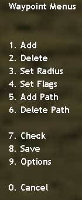
This is the main Waypoint Menu.
To add a waypoint, simply select "1. Add." A new menu will appear,
the "Add Waypoint" menu. All waypoint types described below can be
added by using this menu.

The "Add Waypoint" menu.
Once you have selected a waypoint type from the "Add Waypoint" menu, you will
hear a sound, and the selected waypoint will appear in the map, at the exact position where you stood when you pressed the key.
NOTE:
If you are standing while selecting a waypoint, a standing waypoint will be inserted. All bots will run or walk towards this
waypoint normally.
If you want bots to crouch when approaching a particular position, crouch down when inserting the waypoint. You will notice that
the waypoint you just added is only about half as high as normally. As you inserted it when you were crouched down, it
automatically carries a "Crouch" flag (see: Types Of Waypoints). Bots will now crouch
automatically when trying to reach this waypoint.
Now that you know the basic method used to add a waypoint, let's have a closer look at the waypoint types that exist.
- Types of Waypoints
Normal waypoints
Normal waypoints are the points you need in order to make bots walk through the map. They are used
for navigation only and will not trigger any particular behaviour. You can add a Normal waypoint
by selecting "1. Normal" from
the "Add waypoint" menu. The colour of Normal waypoints
is green, as you can see in the picture below.
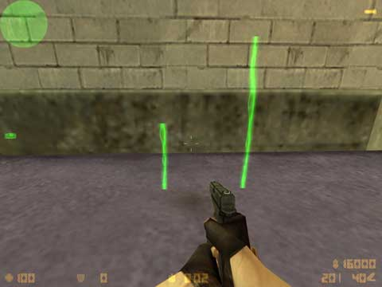
A Crouched Normal waypoint (left) and a Normal waypoint (right)
Terrorist Important waypoints
This type of waypoints can be navigated just as a Normal waypoint by all bots, but it has
one additional function. It marks strategically important points for a Terrorist team. Adding a Terrorist
Important point in a room will tell Terrorist bots to go to the room and check it frequently. You can add this type
of waypoint by selecting "2. T Important" from
the "Add Waypoint" menu.
The colour of Terrorist Important waypoints is red, as you can see in the picture below.
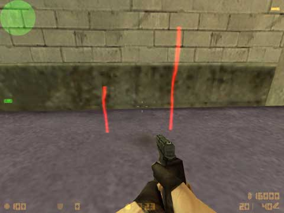
A Crouched Terrorist Important waypoint (left) and a Normal Terrorist
Important (right)
IMPORTANT:
The use of Terrorist Important points depends on the map type!
Wherever the Terrorist team is the "defending" team (i.e. on As_ Cs_ type maps), Terrorist
Important points should be placed at key positions around the hostage area or VIP escape zone. For example, if the hostages
are inside a building, Terrorist Important points should be added behind each entrance to
the building. Doing so will make the Terrorists check all entrances frequently and guard them. Do not place
Terrorist Important points far away on the other side of the map. After all, you don't want
the Terrorists to abandon the hostages and rush planlessly through the map, now, do you? With the VIP escape zone, the same
strategy applies, Make Terrorists guard the key routes to the escape zone by using
Terrorist Important waypoints.
You DON'T need to place Terrorist Important points directly
at the hostages.
Terrorists will check on hostages anyway.
On maps where the Terrorist team is "offensive" (i.e. De_ and Es_ type maps),
Terrorist Important waypoints should not be overused. The "offensive" team will try
to reach the map goal waypoint anyway. The only useful function you can use important waypoints for is to make particular routes
more attractive for the bots. For example, if there is a longer and more complicated, but safer and more surprising route
to the map goal, bots may tend to underuse it a little. In such cases, placing one or two
Terrorist Important waypoints along this route can help.
Counter-Terrorist Important waypoints
The function of this waypoint type is exactly the same as the Terrorist Important waypoint
described above.The only difference is that a Counter-Terrorists Important waypoint obviously
marks strategically important places for the Counter-Terrorist (CT) team. You can add this
type of waypoint by selecting "3. CT Importanat" from
the "Add Waypoint" menu. The colour of Counter-Terrorist
Important waypoints is blue, as you can see in the picture below.
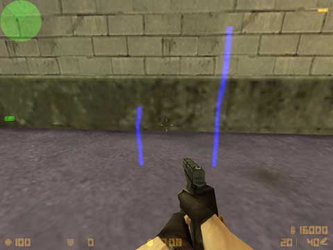
Two Counter-Terrorists important waypoints, normal (right) and crouched (left)
IMPORTANT:
As with the other team specific waypoints, Counter-Terrorist Important waypoints should also be placed
according to the map type. On maps where the Counter-Terrorist team is forced to move out and reach a certain goal - either hostages
to rescue or a VIP escape zone to reach safely. Counter-Terrorist Important points can be useful to make
a particular route more attractive. You DON'T need to place Counter-Terrorist Important points near
a map goal (hostages on CS_ maps, VIP escape zone(s) on As_ maps), Counter-Terrorist bots will go there anyway. It's the most important
point for them, and adding several other important waypoints right next to it doesn't yield any benefit.
On maps where the Counter-Terrosist team is in a defensive role (i.e. on De_ maps and Es_ maps), place
Counter-Terrorist Important points at key positions around the bomb/escape zone(s) in order to make
Counter-Terrorist bots defend all possible routes to the Terrorists map goal.
Ladder waypoints
Ladder waypoints are only used for waypointing ladders, as you possibly guessed. To enable your bots
to use a ladder, simply walk up to the ladder until you get "stuck" on it (you will see your crosshair grow wider once you are
on the ladder). Now place one Ladder waypoint at the bottom of the ladder. Then climb up the ladder
until you are almost completely over the edge. Place a second waypoint here and make sure that the two ladder waypoints are connected,
(This should have happened automatically if the Ladder waypoints aren't too far away from each other,
if not you can create a connection manually), That's all! You can add this type of waypoint by selecting
"4. Ladder " from the "Add Waypoint"
menu. The colour of Ladder waypoints is pink, as you can see in the picture below.
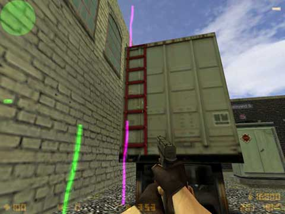
A waypointed Ladder, one Ladder waypoint at the bottom, the other near the top
Some general hints and notes concerning ladder waypoints:
- Waypoint ladders AFTER you waypointed the areas above and below them! If you waypoint ladders first, all waypoints in reach of
a ladder waypoint will be connected with it and have their radii reduced to zero automatically!
- It doesn't matter whether you place the top or the bottom Ladder waypoint first.
- If the ladder is very long, you can place additional Ladder waypoints between the bottom
and the top end.
- The bottom waypoint will automatically get connected with the nearest waypoint, independent of current AutoPath Max Distance
settings.
- The top waypoint will usually get a connection towards it automatically, but you will have to add a connection leading
away from it manually.
- Ladder waypoints will always have a radius of zero, and this shouldn't be changed!
Rescue waypoints
Rescue waypoints are only needed on Cs_ type maps (hostage rescue scenarios). They mark the zone
where the Counter-Terrosist team must bring the hostages, the rescue zone. Place one of these waypoint inside each rescue zone
there is. If there is only one, you only need one Rescue waypoint. Placing more points in one rescue
zone is unnecessary bulk and will rather cause problems than improve anything.
A Counter-Terrorist bot that has succeeded in "activating" the hostages will determine the position of the nearest rescue
point and lead the hostages there. When the bot has reached the rescue point, it will check if the hostages are really rescued
and after max time about 5 seconds turn back to return to combat. Badly placed rescue points may lead to bots turning around before
the hostages have really reached the rescue zone. As a consequence, the hostages will be left standing a few inches away from
the rescue zone while the bot considers its mission as completed and turns back to fight, ignoring the deserted hostages.
That's why you are advised to place a rescue waypoint well inside a rescue zone, not at its edges!
In the editor, rescue points will be displayed in bright white (see below). Their radius is set to zero by default and shouldn't
be changed. All bots can use this waypoint type for Normal navigation as well. You can add this
type of waypoint by selecting "5. Rescue " from the
"Add Waypoint" menu. The colour of Rescue waypoints
is white, as you can see in the picture below.
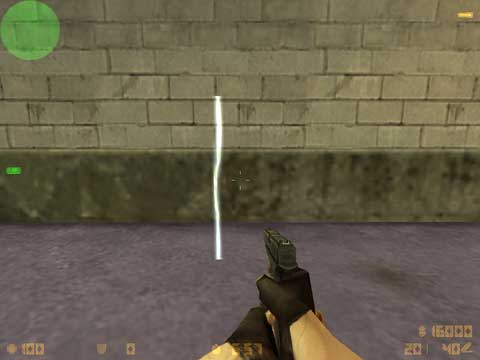
A Rescue point. You can also make this point Crouched, of course.
Camp waypoints
As the name suggests, Camp waypoints are used to mark good sniper spots. They can be navigated
by all bots. However, whether a bot may camp there or not is determined by the flag you can add to the camp waypoint. You can
make Camp waypoints team specific or leave them "open" to any team.
The colour of Normal Camp waypoints is cyan. Terrorist specific camp waypoints have a reddish hue,
Counter-Terrorist specific ones are a bit blueish, as you can see in the pictures below.
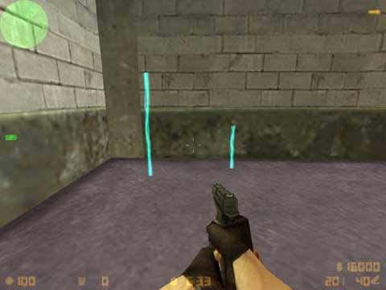
Two Normal Camp waypoints, Standing (left) and Crouched (right).
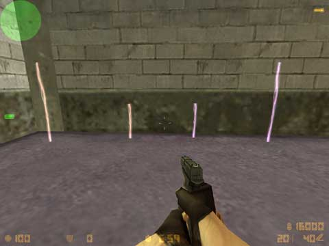
Team specific Camp waypoints:
Two Terrorists Specific points to the left and Two Counter-Terrorists Specific points to the right.
Although there are two entries in the "Add Waypoint" menu
("Camp start" and "Camp end"),
the Camp waypoint is in fact only one point. However, it carries two "markers" that
tell a camping bot where to look while camping. When you are camping yourself, you will monitor a certain area. If you wanted to
define this area, you could describe it as an angle. This angle would be specified by two lines going out from your position: One
that marks the left edge and another one for the right edge. The monitored area would be between these two lines. The mentioned
"markers" fulfill exactly this function. They are displayed as more or less horizontal beams going out from the top of
a Camp waypoint. The Camp start marker is yellow,
the Camp end marker orange, as you can see in the picture below.
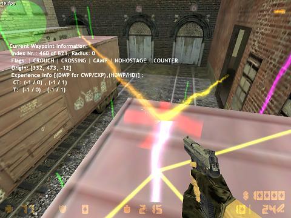
A Crouched Normal Camp waypoint with Camp start (right, yellow) and Camp end
(left, orange) markers.
When a bot approaches the depicted Camp waypoint, it will turn to face the direction of
the Camp start marker (the yellow beam to the left) first. Then it will scan the area
between this marker and the Camp end marker (orange beam to the right) by changing every few seconds
the direction it is facing from one to the other. An enemy moving outside the two markers may escape the bot's attention, unless
it hears the enemy coming. In the piture above, both markers are pointing to the same height. However, you can also specify different
heights for each marker. This is very useful for making bots monitor a ramp, a slope, a stairway or other uneven surfaces.
So far, so good. But how to set a working camp waypoint? Follow these steps:
- Go to the exact position where you want bots to camp (of course, a dark corner or similar locations are best suited
for camping, but whom do I tell this? )
- If you want bots to stand while they are camping, remain standing upright. If you want them to crouch while camping
(more precise aiming!), crouch yourself while adding the point
- Point your crosshair at the exact direction and height where you want your bots to start looking.
- Bring up the "Add Waypoint" menu and select "
6. Camp start". The Camp waypoint itself will now be placed at your current position,
and you will see the two marker beams going out from it. The Camp start marker will already be
pointed at the direction you specified, the Camp end marker will still need some adjustment.
- Now point your crosshair at the exact direction and height where you want your bots to end their monitoring.
- Once again, open the "Add Waypoint" menu, but now select "7. Camp end". You will see that the Camp end marker will now
be pointed at the direction you specified.
That's it! Unless you want to make your Camp waypoint team specific or add another flag (see:
Waypoint Flags section), you are done! In fact, it sounds much more complicated than it actually is.
Some quick notes and hints about Camp waypoints:
- You can alter Camp start and Camp end markers as often
as you want. As soon as you are near an existing Camp waypoint (i.e. as soon as its waypoint
stats are shown in the upper left corner of your HUD), Bring up the "Add Waypoint"
menu and selecting "6. Camp start" or
"7. Camp end" will NOT add a new waypoint.
Instead, it will readjust the Camp start and/or Camp end
marker(s) of the nearby Camp waypoint to the new direction you specified.
- Thus, if you want to place two Camp waypoints closely together, make sure that the waypoint stats of
the first one have disappeared from your HUD before you set the second one. If the stats of the first waypoint are still visible,
you will accidentally modify the Camp start and Camp end
markers of that waypoint instead of inserting a new point.
- Don't place Camp waypoints in strategically irrelevant areas, or you will see bots having
a situation totally unimportant areas while their team mates are under heavy attack.
- Provide the "defending" team with some nice sniper spots near the map goal! In general, if you make team-specific
Camp waypoints, make more for the defending team than for the attacking team.
Map Goal waypoints
This waypoint type obviously indicates the Map Goal.
On an As_ map, the Map Goal waypoint tells the bots where the VIP escape zone is. Make sure
the escape zone symbol is visible on your HUD when you place a map goal waypoint there. Otherwise the VIP may end up reaching
the point and running away again just like you would do with Rescue waypoints.
On a Cs_ map, the Map Goal waypoint marks the position of the hostages. It is
NOT necessary to place one Map Goal waypoint per hostage.
Unless the hostages are standing really far away from each other, one point per hostage group will perfectly do.
On a De_ map, the Map Goal waypoint marks the bomb spots. It must be placed somewhere inside
the bomb zone, i.e. the bomb icon must be blinking on your HUD when you place such a waypoint. In contrast to Cs_ maps, on De_ maps
it makes sense to set various goal waypoints in one bomb zone. This will enable bots to choose from several spots to plant the bomb
and make them less predictable.
NOTE:
Bots will always crouch down while planting the bomb. While it is perfectly possible to make the
Map Goal waypoint crouched, but this is not necessary if you want to make sure that your bots
crouch to plant the bomb, they will do so anyway.
Finally, on Es_ maps, the Map Goal waypoint marks the escape zone for the Terrorists. You can
follow the same rules as for As_ maps.
Now you may wonder how to determine the exact function of a the Map Goal waypoint. Don't worry,
this is entirely map specific, you don't have to do anything about it. All bots of both participating teams will automatically
know what the the Map Goal is, they only need the point to guide them there. You can add this
type of waypoint by selecting "8. Goal" from the
"Add Waypoint" menu. The colour of Goal waypoints
is purple, as you can see in the picture below.
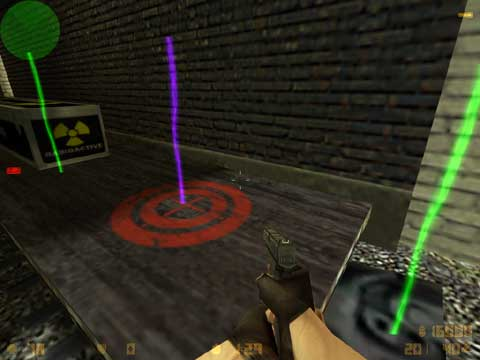
The purple waypoint on the marked spot is the Map Goal, in this case
a bomb spot.
Jump Connections
Jump is not actually a waypoint but a connection between waypoints. (see: Waypoint Connections)
So now we've seen what type of waypoints the bots use, we can see how we can string these waypoints together to make a gaint
web to cover the map with
- The Radius
The Radius of a waypoint is indicated by means of horizontal blue beams that go out in all
directions from the position of a waypoint. Viewed from above, the beams form a pattern that is like the spokes of a bycyle wheel
or the like the petals of a flower. The photo below was taken from above, we are looking down onto a waypoint, and you can see
the colour of a Radius is Blue, as you can see in the picture below.
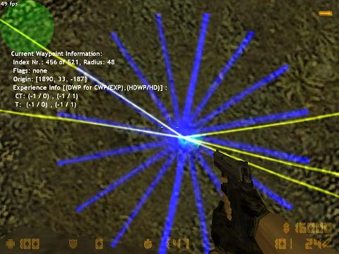
A Normal waypoint and its Radius indicators viewed from above.
These Radius indicators are a great means to see how big the radius of a waypoint actually is, it ends
exactly where the beams end.
What does the Radius actually do? It tells the bots how exactly they must navigate around the waypoint
in question. If a bot walks past a row of waypoints with big radii, it will know that super-exact navigation is not required. If the radii
are small, the bot will stick strictly to the waypoints.
Thus, in open areas big radii help to make bot navigation natural - you wouldn't want to see a bot run across a wide courtyard as if it was
following an incredibly thin, straight line painted onto the ground, now, would you? It looks much more natural if the bot takes advantage
of the space he has around him.
However, in narrow corridors and doorways or on bridges, the situation is different, too big radii would make bots too careless, they would
bump into walls or even fall off a bridge because they think they can walk anywhere inside that big radius!
That's why choosing appropriate waypoint radii is so important. As a general rule, keep the radii big in open areas and make them small
in narrow passages. Read the following section to learn how:
Setting or Changing the Radius:
The good news first: You don't have to set every single Radius manually, the editor will do much of
the work for you! It will automatically calculate the Radius of a waypoint depending on the area around it.
If the editor detects higher (~more than knee-high) obstacles like walls nearby, it will automatically adjust the Radius to reach up to the wall, not further. However, the maximum Radius is limited to
96 units. This means that even on a totally open plain, where the nearest obstacle is hundreds of distance units away, the
Radius will not exceed 96.
Now you might wonder "Well, if the editor does all this for me, why would I change radii by hand?" The answer is simple,the editor
helps, but it isn't perfect, it cannot detect all kinds of obstacles (I can't go too much into detail here because all this is pretty much
map-related). Anyway, you will see places where the radius cuts into an obstacle - it could be a very thin pillar, a fence, or even
a solid-looking car that's parked in the streets... as I said, it depends on how the mapper built these elements.
Another problem is not with walls, but with holes and cliffs, If there is no high obstacle, the editor will regard an area as clear and set
a big radius, it doesn't care if right next to the waypoint there's a yawning abyss where bots will fall to death!
So these are areas where you will have to keep a watchful eye on your radii and if necessary, change them by hand. In narrow corridors
and especially around narrow doorways, you will see that even a small radius calculated by the editor doesn't make the bots navigate
precisely enough. In such places, I strongly recommend lowering the radius to zero.
In order to change the radius of a waypoint, bring up the main menu and select
"3. Set Radius". The following menu will appear:
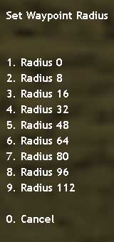
The Radius menu with all options between 0 and 112.
Simply select an option by pressing the corresponding key, and the radius of the currently active waypoint will be changed to
the selected value. You will quickly get a feeling for these numbers if you play around with them a bit.
Waypoints with fixed radii
Note:
Some waypoint types will always have, and require, a radius of zero. The radii of thes waypoint types
should NOT be changed! The types with fixed radii are: Ladder,
Rescue, Camp (no matter if team specific or not) and
Map Goal.
- Connecting Waypoints
Waypoints alone aren't sufficient to make bots move the way you want. They must be connected with other waypoints in order to let
bots reach their goal. By default, connections up to a certain distance will be made automatically.
You can select the automatic connection distance (AutoPath Max Distance, APMD) by bringing up the main menu and selecting
"9. Options".
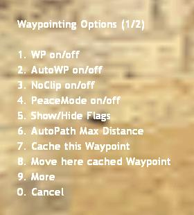
The Waypoint Options menu - page 1.
Now select the entry "6. AutoPath Max Distance". The following sub-menu will appear:
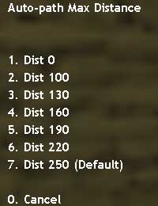
The APMD (AutoPath Max Distance) menu.
Select the desired distance from this menu. After selecting a distance, connections up to that distance will be drawn automatically,
of course, you can also add and remove connections manually.
However, this needs a little bit more explanation, and it's better to explain if you know the different connection types.
So let's first have a look at these - afterwards you can read how to add and remove such connections by hand.
Two-way (bidirectional) connections
The vast majority of all connections in a waypoint set will be bidirectional. Obviously, these
connections enable bots to walk both from point A to point B and back from point B to point A. The colour
of bidirectional paths is yellow, as you can see in the picture below.
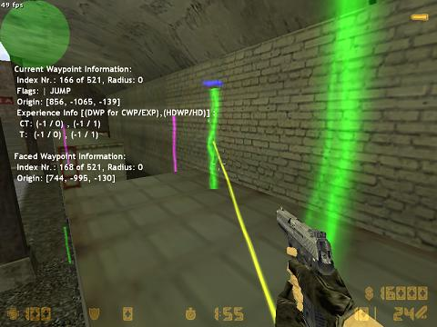
A 2-Way connection between the two depicted waypoints.
One-way connections
One-way connections enable bots to walk from point A to point B, but not vice versa. They can be useful
to make bots drop down a wall or a high crate, but prevent them from attempting to get up. Of course, there may be more places at which a
1-way connection can make sense, but that depends on the map.
In game, 1-way connections will be visible from 2 waypoints, their start and their end waypoint. In order
to show you the direction of 1-way connection, it will be shown in different colours depending on from which
perspective you view it. Let's say you have a 1-way connection from point 1 to point 2. In this case,
when you are standing at point 1, you will see the outgoing 1-way connection displayed in white as you
can see in the picture below.
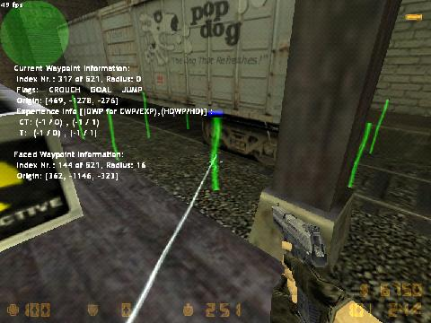
An Outgoing 1-Way connection,
(A connection that leads FROM where i am standing TO the point in the background, but not back from it).
The picture below shows the same two waypoints and the same connection, but this time I took the screenshot while I was standing near
the second waypoint.The incoming 1-way connection displayed in teal as you can see in the picture below.
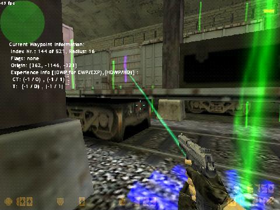
An Incoming 1-Way connection
(A connection that leads FROM the point in the background TO the point where i'm standing).
The fact that 1-way connection are shown from both involved points is a great feature. It makes
spotting errors very easy and saves you the trouble of running around to check if there is a connection TO the point where you are
standing.
Jump connections
Jump connections are a bit special as they cannot be drawn like any other connection. But that's not all,
apart from that, Jump connections can also be
one-way or two-way connections.
To make matters even more complex, their 2-way version can come in two flavours: A "pure" two-way jump connection,
i.e. a Jump connection from A to B and another Jump connection back from B
to A or a "mixed" two way connection, with a Jump connection leading from A to B and a regular
one-way connection back from B to A. The latter version will be very rare, though. Now once again, this sounds more complicted than it
actually is.
The Jump connection horizontal line displayed in red(Outgoing Jump connection), viewed from the waypoints
where the bots will start their jump can be seen in the picture below.
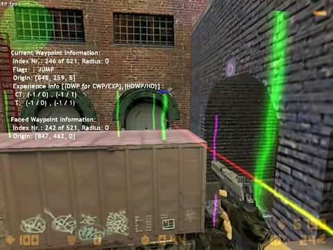
An Outgoing Jump connection, it will make bots jump to the waypoint in
the background.
Here is the same connection viewed from the waypoint where bots will land after their jump. As you can see, it is shown as a
incoming 1-way connection (displayed in teal). From this side, you cannot tell whether this incoming
connection is a Jump connection or a 1-way outgoing connection. Given
the fact that there's a gap where bots can fall down, it had better be a
Jump connection...
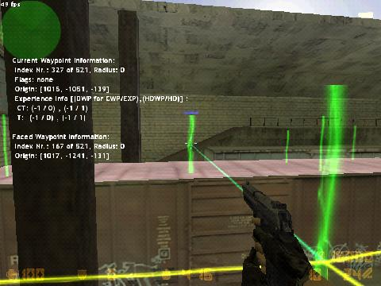
An Incoming Jump connection, bots start their jump at the waypoint in the background
and land here - hopefully.
Now look at the pprevious screenshot, I could add a regular 1-way connection back to the waypoint in
the background. (I know it wouldn't make sense at this spot, but let's just pretend there were no gap between the waypoints.)
After making this connection, the connection line would turn into a Two-way connection when viewed from
the position shown in the screenshot. It will show you that there's a way to get TO the waypoint in the background and back FROM it.
At the same time, you will know that bots will walk back to the waypoint in the background. Why?
Because a "pure" 2-way Jump connection shows as a red line from both sides. If i added a jump back
from the point where I took the screenshot to the point in the background, the connection would show as a red line, no matter from which of
the two waypoints I look at it. This will tell you that bots will jump between the two waypoints, no matter in which direction they are
following the connection.
- Adding / Removing connections manually and Special Cases
Now you know the most important things about connections in general and the different types of connections. You also know how to adjust
automatic connection lengths and how to add a jump connection by hand. But how do you add or remove a connection by hand?
In older PODBot versions, you could add and remove connections by means of console commands. You will be glad to hear that PODBot MM uses
a much more comfortable method to accomplish this. You simply aim at the desired waypoint and select the action to perform from the
on-screen menu!
Here's how it works (Look at the screenshot below), let's pretend we wanted to delete the connection from the waypoint where we're
standing to the left waypoint near the wall, aim at the waypoint with your crosshair. As soon as the waypoint is selected, it will become
bigger, and a little blue cross will appear on top of it.
NOTE 1:
This only works if you are standing near a waypoint and aiming at another one! If you are standing in a waypointless area, you won't be
able to use this function because it needs two selected waypoints (The one where you are standing and the one you are aiming at).
NOTE 2:
You can override whatever APMD value with manual connections, but there's a limit of 500 units.
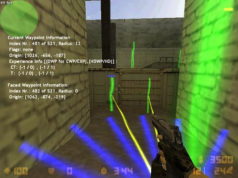
The left waypoint is selected, although the crosshair isn't exactly on it.
Note how big is its width in comparison to the other, unselected waypoint! Besides, you can see the blue cross on top.
You will see that the crosshair doesn't have to be exactly on the waypoint, it's usually enough if you aim somewhere near the point.
Sometimes you will even have to aim a little bit away from the waypoint in order to activate it. Simply move your crosshair around
the waypoint until you see that it gets bigger and has the blue cross on top of it. Leave the crosshair where it is and perform whatever
action you want to perform.
If you have problems activating a waypoint, you can also try changing your position a bit, Walk a step forward or to the side, aim at
the desired waypoint from a slightly different angle. You will get a feeling for it quickly!
The following picture demonstrates some of the peculiarities of this aiming system, especially over longer distances. The crosshair is
actually nearer to the right camp waypoint in the background,
but nonetheless, the left one is selected!
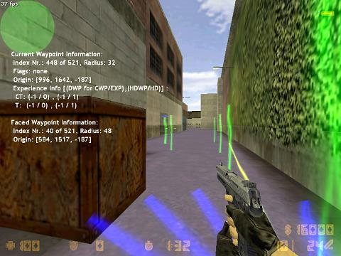
Despite the crosshair being nearer to the right waypoint, the left one is
selected!
In the screenshot below, I stood at the exact same position and aimed until I had the right waypoint activated. As you can see that
the crosshair is off to the right quite a bit. But you can also see how well the activated waypoint is visible even from such a large
distance. Normally it would be even slightly thinner than the left waypoint, as it is a little further away. But here it is nice
and fat, easy to tell apart from unselected waypoints.
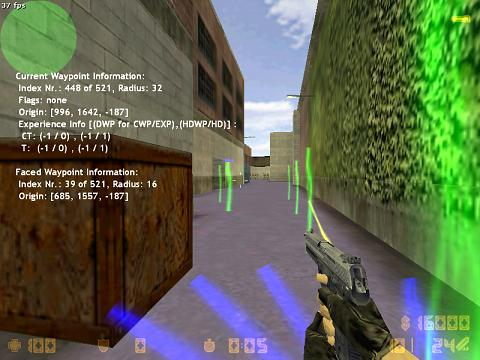
Now aiming at the right waypoint, the crosshair is a bit off, but the waypoint
is selected.
Now you know how to activate a waypoint by aiming at it. In order to add a connection now, bring up the main menu and select
"6. Add Path". The following sub-menu will appear:
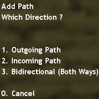
The "Add Path" menu where you can select which type of connection to add.
Well, this is almost self-explanatory, Select the connection type you want to add, and it will be drawn. You have read about the available
connection types above, so this should be no problem.
"Outgoing path" means a 1-way connection going from your current
position to the waypoint you're aiming at.
"Incoming path" means the opposite, a 1-way connection coming
towards
your position from the waypoint you're aiming at.
"Bi-directional (Both ways)" means obivously a
Two-way connection
Note: Jump connections can only be drawn by performing the jump, that's why this connection type is not
available in this menu.
Removing connection manually is even easier, but works slightly different because you don't have to choose what to remove. Just aim at
a waypoint and select "6. Delete Path" from the waypointing menu.
If there is a 1-way connection (Incoming or Outgoing) between the waypoint
where you are standing and the waypoint you are aiming at, it will be deleted.
If there is a 2-way connection between the two waypoints, selecting "
6. Delete Path" will first delete the connection that leads from your position to the other waypoint. Thus, a 1-way connection from the waypoint you are aiming at back to your own position will remain. Simply hit "6. Delete Path" again, and it will disappear.
Special cases: Adding connections with the waypoint cache function
In some cases, especially with Ladder waypoints, you may run into serious problems to aim at a waypoint.
Let's say you want to connect two Ladder waypoints. You're standing at the lower end of the ladder, but you
just can't get the upper ladder waypoint activated. In such a case, simply bring up the waypointing menu and select
"9. Options".
The Waypoint Options menu - page 1.
Select "7. Cache this Waypoint". You will see a message on your HUD: "Waypoint #node
has been put into memory", where "node" is the number of the waypoint you're standing at.
Note:
As soon as a waypoint has been put into the cache, all manual connection adding/removing actions will affect the cached waypoint, no matter
how far you are away! So be careful with this function. If you put a waypoint into the cache, then walk to the other side of the map and
manually add a connection somewhere, the connection will lead to the cached waypoint, even if this means going through the entire map and
thick walls!
But back to the example: You are still standing at the lower ladder waypoint and have just cached it. Now you can climb up to
the upper ladder waypoint and add a 2-way connection. This new
2-way connection will automatically be made between your current position (the upper ladder waypoint)
and the cached waypoint (in this case, the lower ladder waypoint).
In order to clear the cache, simply walk to any point in the map where there is no waypoint nearby. Then, select "7. Cache this Waypoint" again. You will see a HUD message: "Cache cleared! (no waypoint nearby)".
Now the cache is empty, and you can continue working just like before.
You can also move some cached waypoint to the position You are standing at. Just from the same Options menu (page 1) You need to select 8
- Move cached waypoint here.
HINT:
As it was mentioned, this function can cause errors if you don't pay attention to what you are doing. Therefore, I recommend clearing
the cache immediately as soon as you don't need it anymore.
- Waypoint Flags
Waypoint flags are anything that makes a waypoint "behave" in a special way and serve for more (or different) things than mere
navigation purposes.
Flags can be divided into two categories, and if you wanted to invent some nice names for these categories, you could call them exclusive
and cumulative flags.
What does that mean?
Well, exclusive flags are flags that exclude each other - a waypoint carries EITHER one flag OR another, but never two at the same time.
Such a flag will change the type of a waypoint. For example, if you have a Normal waypoint and add
a "6. Rescue" flag to it, the waypoint will turn into a Rescue
waypoint, with all its functions. It cannot be a Normal waypoint AND a
Rescue waypoint at the same time.
The following flags are exclusive: Map Goal, Ladder, Rescue, Camp and Team Specific (CT or T)*. Adding one of these flags to any waypoint will turn it into the selected waypoint type.
Note:
Team Specific is really a special case, because with Camp waypoints, it's cumulative - but with all others,
it's exclusive.
Cumulative flags are flags that don't exclude each other, i.e. a waypoint can carry one of these flags AND a another one at the same
time. For example, a waypoint can be Team Specific (CT or T) AND carry a
Button flag at the same time. It can mark a strategically important position for one of the teams
and at the same time tell all bots to push a nearby button.
The following flags are cumulative: Button, Lift, Crouch and
No Hostage and Team Specific (CT or T)
*.Adding one of these flags to any waypoint will also mark it into the selected waypoint type including what type it was before.
Note:
Team Specific is only cumulative when applied to Camp waypoints.
Bring up the main menu and select "4. Set Flags ".
The following sub-menu will appear:
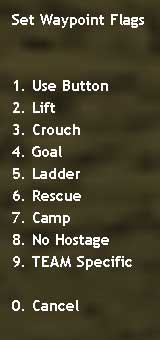
The Waypoint Flags menu.
The following list will show the effects of each flag in detail:
Use Button (cumulative)
This flag will tell bots that they need to push a nearby button every time they come past the flagged waypoint. You can add this flag to
any waypoint type. This flag is not necessary for button-triggered doors, because bots that are about to go through a closed button-triggered
door will "see" that their path is blocked and automatically look for the button that opens the door.
However, there might be situations where the bots can't detect an obstacle in their path but still need to push a button in order to reach
their goal. Imagine a deadly laser beam that can be temporally deactivated with a button, for example. Bots won't be able to detect the
laser beam as an obstacle and thus ignore the button and die. But if you add a button flag to the waypoint next to the deactivator button,
all bots will be forced to push the button before they continue.The Use Button is shown as a little green cross
near the top of a waypoint as you can see in the picture below.
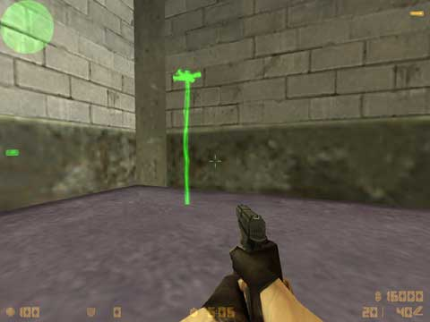
This Normal waypoint is marked with a Button Flag.
Lift (cumulative)
You won't be too surprised to read that a Lift flag is used to enable bots to use lifts. Lift flags must be applied to the waypoint
inside an elevator shaft. Imagine a normal elevator that can move between ground level and 1st floor. You will have one waypoint inside
the elevator cabin at ground level, and another one you added inside the elevator cabin when you were at the 1st floor. Both waypoints
will be connected to each other. If there were no connection, bots wouldn't know that one possible path to get from one storey to the
other leads through the elevator. Now the problem is that bots are supposed to hit the button, walk into the elevator, stand still until
they have reached the other storey and walk out of the elevator. This is where the Lift flags are needed: They tell your bots to hold
their position until the elevator has reached the other storey.
Lift flags are visualized like use_button flag, but instead green color You can see the same in pink color.
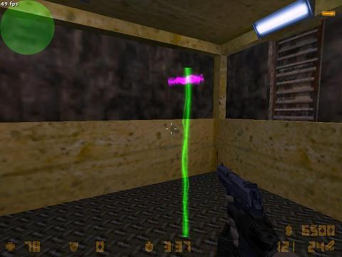
This Normal waypoint is marked with a Lift Flag.
Crouch (cumulative)
Adding this flag to a waypoint will not change the waypoint type (e.g. Normal, Goal, Ladder etc.), but it will make the selected waypoint a Crouched waypoint.
You will see the effect when you look at the waypoint to which you applied the flag. I.e. It will be smaller, just as if you had made it a
Crouched waypoint in the first place.
However, it's recommended placing Crouched waypoints the normal way instead of adding a Crouch flag to standing waypoints. It's taking two
steps where only one step is necessary, and besides, if you add the Crouch flag to a standing waypoint, the waypoint will float in the air
several inches above the ground.
Map Goal (exclusive)
This flag will turn any waypoint into a Map Goal waypoint. It can be quite useful if you waypointed
the area around the map goal with Normal waypoints and then realized that you would rather have
a Map Goal waypoint in place of one of the Normal waypoints. Instead of
deleting the Normal waypoint and inserting a Map Goal waypoint, you
can just use this flag.
Ladder (exclusive)
A Ladder flag will obviously turn the waypoint it's applied to into a
Ladder waypoint. If you accidentally added a Normal waypoint where
there should be a Ladder waypoint (for example when jumping to a ladder), this flag can come
in handy.
Rescue (exclusive)
Forgot to add a Rescue waypoint in the rescue zone? There are already so many waypoint around that you
don't want to add yet another one? Well, this flag will turn any waypoint into a Rescue waypoint.
Also handy when your Rescue waypoint isn't far enough in the rescue zone that bot's only rescue half
the hostages and run back to the enemies with the hostages tagging along. Just make your previous Rescue
waypoint into a Normal and change another Normal deeper in the zone to
a Rescue.
Camp (exclusive)
This flag will turn any waypoint into a Camp waypoint. Right after adding the flag, however, this
freshly made Camp waypoint will not have its Camp start and
Camp end markers correctly set. You must do so manually by selecting
"6. Camp start" and
"7. Camp end" from the "1. Add" menu,
just as you'd do with any Camp waypoint.
No Hostage (cumulative)
This flag is only needed on CS-maps, but there it's absolutely important! It will block a waypoint
for a CT bot that's leading hostages towards the rescue zone. By using this flag you can prevent bots from
choosing paths where the hostages cannot follow them (up a ladder or through a narrow vent, for example). The "8. No Hostage" flag must be applied to the first waypoint that should
NOT be reached with hostages. In order to make it easier for you to keep an overview over which
point are blocked and which aren't,
the No Hostage is shown as a little red cross near the top of a waypoint as you can see in
the picture below.
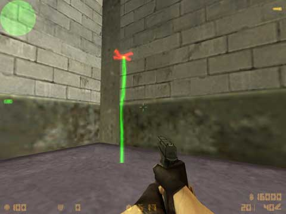
This Normal waypoint carries a No Hostage Flag. Counter-Terrorists bots with
hostages won't be able to use it.
Team Specific (cumulative with Camp waypoints, else exclusive)
Upon selecting this flag, you will be prompted with a sub-menu where you can choose for which of the two teams the waypoint will
be specific.
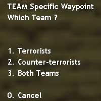
This menu will appear when you select the flag "Team Specific".
When applied to Normal, Ladder, Rescue
or Map Goal waypoints, this flag will turn the waypoint into a Team Specific one. A
Counter-Terrorist Important waypoint if you selected
"2. Counter-Terrorists" and a Terrorist Important
one if you selected "1. Terrorists".
With CT and T Important points, you can use this flag to change the team
the waypoint is associated with. For example, you can use it to turn a CT Important waypoint into
a T Important one. If you select the third option,
"3. Both Teams", you can turn any CT or
T Important waypoint into a Normal waypoint.
With Camp waypoints, however, this flag works a bit differently. You can add it to any
Camp waypoint to turn it into a Team Specific Camp waypoint. Only bots of the associated team will be
allowed to camp there. Of course, you can also change a Team Specific Camp waypoint back to a normal Camp
waypoint by selecting the third option"3. Both Teams".
- Waypoint Data Strored
The Waypoint Editor shows some useful for waypointers and bot coders information about the data which is stored in pwf (main waypoint file)
and pxp (experience data file). As You could already see at examples above it shows at the top the full information about the current waypoint
(You are in its radius right now) and a bit below the basic information (index number, radius and origin) about the cached waypoint
(if You stored some waypoint in the cache - to use it later to add/delete some paths to it) and at the bottom is the basic information
(also index number, radius and origin) about the waypoint You are just facing at. Of course - if You didn't cache any waypoint or You are
currently facing no waypoint at all, there will be only the data displayed of the waypoint You are in its radius right that moment.
Experience data shows some additional information about the waypoint (if it's already collected). DWP (the most Danger Waypoint) for CWP
(Current Waypoint) / EXP (collected expierience damage value for the current Waypoint). If DWP is -1 that means there is no any danger waypoint
for the current waypoint and there is no any data collected for it (basically that means the bot was never attacked in that place).
If there is something different than -1, then You can also expect the graphical representation of showing the danger direction for
the bot - it's a line (red for Ts and/or blue for CTs) leading from the current waypoint to the most danger waypoint for it
(separatelly for each team).
HDWP (the waypoint number with the Highest Damage value collected) / HD (highest damage value collected for the most Highest Damage Waypoint)
- basically it means the most danger waypoint number with its damage value collected. That data is collected separatelly for each team, so
that's why You have two lines of that data (one for CTs and one for Ts).
Once a while the experience data is recalculated to take away the half of each of values (if the overflow for some of them is about
to happen).
Here is an example of the data You can see.
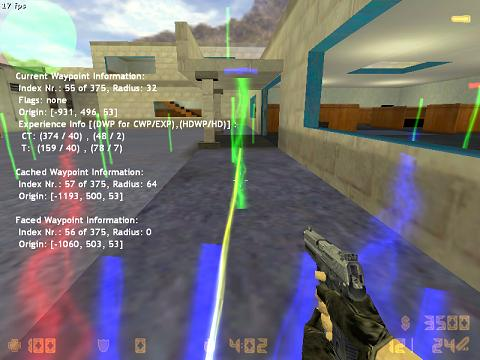
Showing the data of current, cached and faced waypoint
Note how it's shown the direction to the most danger waypoint for the current waypoint.
- Waypoint Debugging
pb debuggoal
Waypoint debugging is a way to send the bots to specific waypoints to see how well they will navigate to them. To debug your
waypoints add one bot to you map when you are waypointing. You then issue this command in the console to direct the bot to navigate
to the specified waypoint.
pb debuggoal waypoint#
Here is an example of using this command. "pb debuggoal 66"
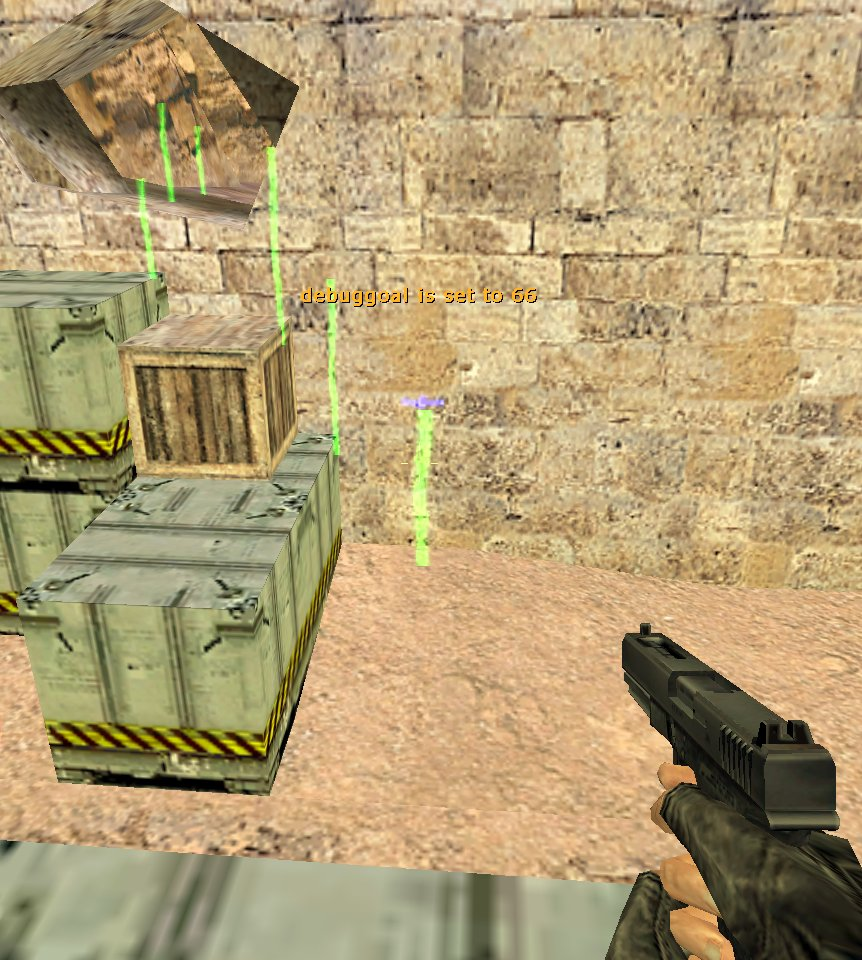
Setting the debuggoal waypoint to waypoint 66
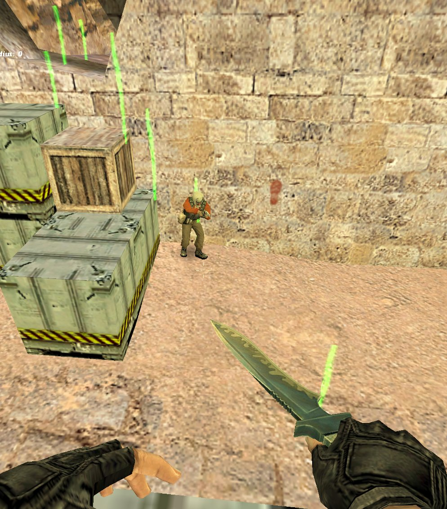
Bot navigating to waypoint 66
This command is also on the waypoint Options menu - page 2.
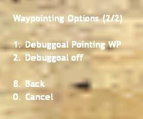
The Waypoint Options menu - page 2.
That makes it easier to set the debug waypoint. Instead of going to the console and typing "pb debuggoal 66
to direct the bot to go to waypoint 66 you can bind a key like
this:
bind "i" "pb wpmenu;menuselect 9;menuselect 9;menuselect 1"
An then all you have to do is point to the waypoint you want the bot to navigate to and press the key in your bind. Key "i" for this
example.
To cancel the debuggoal waypoint select the waypointing options menu 9 page 2 "Debuggoal off"
So there you go, that covers everything you need to know about waypoints, paths connections, radii, waypoint flags, in order
to waypoint a map and some nice little tips and tricks you can use. But there's one more thing you need to read before you start
making a name for yourself in the world of waypointing, the next part contains some breifing on the common errors new waypointers make
as well as some more tips and tricks to help you become a pro waypointer faster, like using bindings instead of menu's.
So click on 'Waypoints - Common errors' and get into it!
|
|